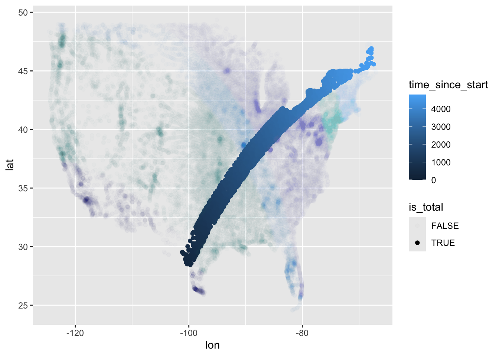

The most recent TidyTuesday session looked at data about solar eclipses in the USA, and was led by Myriam. The repo readme is here
Loading the data
library(tidyverse)
── Attaching core tidyverse packages ──────────────────────── tidyverse 2.0.0 ──
✔ dplyr 1.1.4 ✔ readr 2.1.5
✔ forcats 1.0.0 ✔ stringr 1.5.1
✔ ggplot2 3.5.0 ✔ tibble 3.2.1
✔ lubridate 1.9.3 ✔ tidyr 1.3.1
✔ purrr 1.0.2
── Conflicts ────────────────────────────────────────── tidyverse_conflicts() ──
✖ dplyr::filter() masks stats::filter()
✖ dplyr::lag() masks stats::lag()
ℹ Use the conflicted package (<http://conflicted.r-lib.org/>) to force all conflicts to become errors
# Let's use the tidytuesdayR load packageall_data <- tidytuesdayR::tt_load('2024-04-09')
--- Compiling #TidyTuesday Information for 2024-04-09 ----
--- There are 4 files available ---
--- Starting Download ---
Downloading file 1 of 4: `eclipse_annular_2023.csv`
Downloading file 2 of 4: `eclipse_total_2024.csv`
Downloading file 3 of 4: `eclipse_partial_2023.csv`
Downloading file 4 of 4: `eclipse_partial_2024.csv`
--- Download complete ---
Tidying the data
The data are a list of dataframes. Each dataframe has a similar data structure. We decided to spend some time tidying these dataframes, then combining them again into a single dataframe with additional attributes
We realised total is a swathe of locations cut through the rest of the USA. We therefore thought it might be good to show the points coloured by whether they are flagged as total or partial in eclipse type
And that’s where we got to. We recombined two datasets to show which parts of the USA were in the path of the total eclipse. (Nick mentioned that he’d seen data suggesting AirBnB prices were especially high for properties in this swathe!)
Going further
We could have looked at doing something similar with the annular and partial data for 2023:
Don't know how to automatically pick scale for object of type <difftime>.
Defaulting to continuous.

We can see from this that the event seemed to start on the west coast and move east.
Finally, we could have looked at adding a basemap.
I tried following this tutorial to get a basemap using ggmap. Unfortunately, ggmap now requires registering API keys (and credit card details) with Google. So this exercise is as yet incomplete!